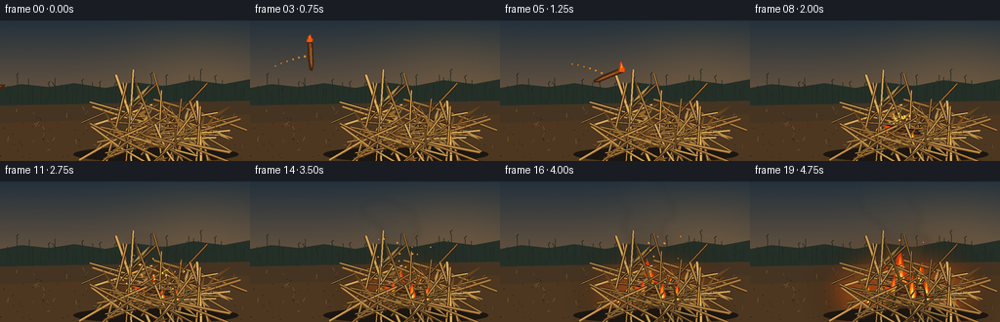
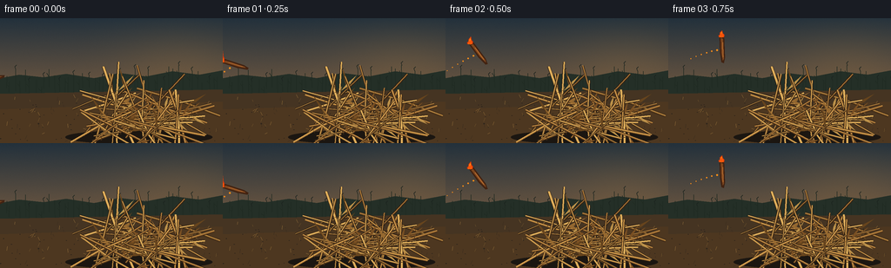

CODING AGENTS AS PIXEL WORLD MODELS
traex/GPT-5.6-Sol · material_0030
点击播放 · 原生 RGB 像素
逐轮保存的候选
回放视频、检查图与代码变化。
每份候选均可单独播放。实际图片检查记录在下方工具轨迹中。
候选 01播放与检查图
点击播放 · 原生 RGB 像素


展开代码变化
--- 上一保存版本
+++ 本次保存版本
@@ -0,0 +1,404 @@
+"""Procedurally render the requested five-second RGB video.
+
+The scene is intentionally built only from Pillow/numpy geometry. It uses 3x
+supersampling for clean silhouettes and deterministic pseudo-random details so
+rerunning this file reproduces the same video.
+"""
+from pathlib import Path
+import math
+import random
+
+import numpy as np
+from PIL import Image, ImageDraw, ImageFilter
+
+import artifact_io
+
+
+W, H, N, FPS = 256, 144, 20, 4
+S = 3
+SW, SH = W * S, H * S
+
+
+def sc(v):
+ return int(round(v * S))
+
+
+def pts(seq, ox=0.0, oy=0.0):
+ return [(sc(x + ox), sc(y + oy)) for x, y in seq]
+
+
+def line(draw, seq, fill, width=1, joint="curve", ox=0, oy=0):
+ draw.line(pts(seq, ox, oy), fill=fill, width=max(1, sc(width)), joint=joint)
+
+
+def polygon(draw, seq, fill, ox=0, oy=0):
+ draw.polygon(pts(seq, ox, oy), fill=fill)
+
+
+def ellipse(draw, box, fill, ox=0, oy=0, outline=None, width=1):
+ draw.ellipse(tuple(sc(v) for v in (box[0] + ox, box[1] + oy,
+ box[2] + ox, box[3] + oy)),
+ fill=fill, outline=outline, width=sc(width))
+
+
+def cubic(p0, p1, p2, p3, steps=14):
+ out = []
+ for i in range(steps + 1):
+ t = i / steps
+ u = 1 - t
+ out.append((u**3*p0[0] + 3*u*u*t*p1[0] + 3*u*t*t*p2[0] + t**3*p3[0],
+ u**3*p0[1] + 3*u*u*t*p1[1] + 3*u*t*t*p2[1] + t**3*p3[1]))
+ return out
+
+
+def transform(local, cx, cy, angle):
+ ca, sa = math.cos(angle), math.sin(angle)
+ return [(cx + x*ca - y*sa, cy + x*sa + y*ca) for x, y in local]
+
+
+def smooth_noise(x, seed):
+ """A tiny deterministic continuous noise function for coherent flicker."""
+ i = math.floor(x)
+ f = x - i
+ f = f*f*(3 - 2*f)
+ rng0 = random.Random(seed * 7919 + i * 104729)
+ rng1 = random.Random(seed * 7919 + (i + 1) * 104729)
+ return (1-f)*rng0.uniform(-1, 1) + f*rng1.uniform(-1, 1)
+
+
+# Stable pile geometry, constructed once so the pile does not crawl frame to frame.
+rng = random.Random(3011)
+stalks = []
+for i in range(54):
+ cx = rng.uniform(114, 211)
+ cy = rng.uniform(101, 138) - 0.14 * abs(cx - 168)
+ length = rng.uniform(43, 102)
+ angle = rng.choice([rng.uniform(-0.48, 0.40), rng.uniform(-2.75, -0.55)])
+ # Keep long stems concentrated in the heap.
+ x1, y1 = cx - math.cos(angle)*length*.5, cy - math.sin(angle)*length*.5
+ x2, y2 = cx + math.cos(angle)*length*.5, cy + math.sin(angle)*length*.5
+ bend = rng.uniform(-4, 4)
+ mx, my = (x1+x2)/2 - math.sin(angle)*bend, (y1+y2)/2 + math.cos(angle)*bend
+ hue = rng.randint(0, 4)
+ colors = [(139, 91, 40, 255), (171, 120, 55, 255), (192, 143, 70, 255),
+ (117, 78, 34, 255), (212, 164, 84, 255)]
+ width = rng.uniform(1.0, 2.3)
+ # One tapered, curled leaf tied to a random stalk node.
+ u = rng.uniform(.28, .76)
+ nx = x1*(1-u) + x2*u
+ ny = y1*(1-u) + y2*u
+ side = rng.choice([-1, 1])
+ leaf_len = rng.uniform(11, 31)
+ perp = angle + side * rng.uniform(.55, 1.05)
+ tip = (nx + math.cos(perp)*leaf_len, ny + math.sin(perp)*leaf_len)
+ stalks.append(dict(a=(x1, y1), m=(mx, my), b=(x2, y2), color=colors[hue],
+ width=width, node=(nx, ny), tip=tip, side=side,
+ depth=cy + rng.uniform(-2, 2)))
+stalks.sort(key=lambda z: z["depth"])
+
+
+def make_background(frame):
+ """Dusk sky, distant corn field, and dry ground."""
+ # Warm, smoky late-evening gradient with fine film-like texture.
+ y = np.arange(SH)[:, None]
+ top = np.array([35, 49, 60.], dtype=float)
+ horizon = np.array([117, 91, 65.], dtype=float)
+ g = np.clip(y / sc(93), 0, 1)[..., None]
+ arr = top[None, None, :] * (1-g) + horizon[None, None, :] * g
+ arr = np.repeat(arr, SW, axis=1)
+ yy, xx = np.mgrid[0:SH, 0:SW]
+ glow = np.exp(-(((xx-sc(208))/sc(75))**2 + ((yy-sc(48))/sc(44))**2))
+ arr += glow[..., None] * np.array([17, 10, 1])[None, None, :]
+ nr = np.random.default_rng(900 + frame)
+ arr += nr.normal(0, .8, arr.shape[:2])[..., None]
+ arr = np.uint8(np.clip(arr, 0, 255))
+ im = Image.fromarray(arr, "RGB").convert("RGBA")
+ d = ImageDraw.Draw(im, "RGBA")
+
+ # Layered distant field silhouettes.
+ polygon(d, [(0, 69), (22, 65), (50, 68), (76, 64), (108, 69),
+ (137, 63), (168, 67), (198, 61), (229, 65), (256, 60),
+ (256, 98), (0, 98)], (36, 47, 39, 255))
+ dr = random.Random(412)
+ for i in range(48):
+ x0 = i * 5.7 + dr.uniform(-2, 2)
+ base = dr.uniform(79, 92)
+ height = dr.uniform(11, 26)
+ sway = math.sin(frame*.19 + i)*.45
+ line(d, [(x0, base), (x0+sway, base-height)], (31, 42, 34, 220), .75)
+ if i % 2 == 0:
+ line(d, [(x0, base-height*.54), (x0-3, base-height*.77)], (32, 43, 34, 190), .55)
+ if i % 3 == 0:
+ line(d, [(x0, base-height), (x0-1, base-height-3), (x0+1, base-height-5)],
+ (27, 35, 30, 210), .55)
+
+ # Earth foreground in several soft color bands.
+ polygon(d, [(0, 87), (256, 82), (256, 144), (0, 144)], (69, 52, 34, 255))
+ polygon(d, [(0, 105), (256, 96), (256, 144), (0, 144)], (77, 55, 32, 180))
+ # Dry stubble and pebbly texture.
+ gr = random.Random(810)
+ for _ in range(150):
+ x0 = gr.uniform(0, 256); y0 = gr.uniform(91, 143)
+ if gr.random() < .56:
+ col = gr.choice([(121, 91, 47, 85), (53, 42, 29, 95), (163, 122, 62, 60)])
+ line(d, [(x0, y0), (x0+gr.uniform(-3, 3), y0-gr.uniform(1, 5))], col, .45)
+ else:
+ r = gr.uniform(.25, .8)
+ ellipse(d, (x0-r, y0-r*.45, x0+r, y0+r*.45), (42, 34, 27, 80))
+ return im
+
+
+def draw_pile(im, foreground=False, fire_amount=0.0, offset=(0, 0)):
+ d = ImageDraw.Draw(im, "RGBA")
+ ox, oy = offset
+ chosen = stalks[36:] if foreground else stalks[:36]
+ if not foreground:
+ ellipse(d, (75, 129, 244, 145), (27, 22, 17, 145), ox, oy)
+ for idx, st in enumerate(chosen):
+ a, m, b = st["a"], st["m"], st["b"]
+ # Slight darkening near the ignition point as the fire establishes.
+ midx = m[0]
+ burn = fire_amount * max(0, 1 - abs(midx - 158)/38)
+ base = st["color"]
+ col = tuple(int(base[k]*(1-.55*burn)) for k in range(3)) + (base[3],)
+ line(d, [a, m, b], (49, 34, 20, 210), st["width"]+1.1, ox=ox, oy=oy)
+ line(d, [a, m, b], col, st["width"], ox=ox, oy=oy)
+ # Highlight on the sunward side.
+ line(d, [(a[0], a[1]-.35), (m[0], m[1]-.35), (b[0], b[1]-.35)],
+ (237, 188, 101, 105), max(.35, st["width"]*.28), ox=ox, oy=oy)
+ nx, ny = st["node"]; tx, ty = st["tip"]
+ vx, vy = tx-nx, ty-ny
+ mag = max(1, math.hypot(vx, vy)); px, py = -vy/mag, vx/mag
+ leaf = [(nx, ny), (nx+vx*.42+px*2.0, ny+vy*.42+py*2.0),
+ (tx, ty), (nx+vx*.45-px*.75, ny+vy*.45-py*.75)]
+ polygon(d, leaf, tuple(int(col[k]*.88) for k in range(3))+(205,), ox, oy)
+ # Joint rings make these read as corn stalks rather than generic hay.
+ ca, sa = (b[0]-a[0])/max(1, math.hypot(b[0]-a[0], b[1]-a[1])), \
+ (b[1]-a[1])/max(1, math.hypot(b[0]-a[0], b[1]-a[1]))
+ for u in (.34, .67):
+ jx = a[0]*(1-u)+b[0]*u; jy = a[1]*(1-u)+b[1]*u
+ line(d, [(jx-sa*1.5, jy+ca*1.5), (jx+sa*1.5, jy-ca*1.5)],
+ (75, 49, 24, 190), .65, ox=ox, oy=oy)
+
+
+def flame_shape(draw, cx, base_y, height, width, phase, alpha=255):
+ """Draw a layered, asymmetrical flame with a pointed animated crown."""
+ lean = math.sin(phase)*width*.22 + smooth_noise(phase*.6, int(cx))*width*.15
+ outer = [(cx-width*.58, base_y), (cx-width*.62, base_y-height*.24),
+ (cx-width*.33, base_y-height*.38),
+ (cx-width*.39+lean*.25, base_y-height*.63),
+ (cx+lean, base_y-height),
+ (cx+width*.22+lean*.35, base_y-height*.58),
+ (cx+width*.55, base_y-height*.34), (cx+width*.53, base_y)]
+ polygon(draw, outer, (220, 57, 9, alpha))
+ middle = [(cx-width*.38, base_y), (cx-width*.37, base_y-height*.28),
+ (cx-width*.10+lean*.16, base_y-height*.67),
+ (cx+lean*.35, base_y-height*.83),
+ (cx+width*.15+lean*.15, base_y-height*.43),
+ (cx+width*.37, base_y-height*.25), (cx+width*.35, base_y)]
+ polygon(draw, middle, (255, 137, 18, alpha))
+ inner = [(cx-width*.22, base_y), (cx-width*.17, base_y-height*.24),
+ (cx+lean*.20, base_y-height*.49),
+ (cx+width*.18, base_y-height*.19), (cx+width*.20, base_y)]
+ polygon(draw, inner, (255, 226, 98, alpha))
+
+
+def draw_smoke(im, frame, amount):
+ if amount <= 0:
+ return
+ smoke = Image.new("RGBA", (SW, SH), (0, 0, 0, 0))
+ d = ImageDraw.Draw(smoke, "RGBA")
+ # Persistent particles, born at regular intervals and advected upward-left.
+ time = frame / FPS
+ for j in range(22):
+ born = 1.55 + j*.17
+ age = time - born
+ if age < 0:
+ continue
+ life = 2.4
+ if age > life:
+ continue
+ pr = random.Random(6000+j)
+ x0 = 157 + pr.uniform(-8, 10) + min(j/21, 1)*amount*18
+ x = x0 - 8*age + math.sin(age*2.0 + j)*4.2
+ y = 104 - age*31 - 3.8*age*age
+ r = (3.7 + age*7.1) * (0.82 + pr.random()*.35)
+ fade = math.sin(math.pi*min(1, age/life)) ** .65
+ a = int(50 * fade * min(1, amount*1.8))
+ col = (42, 42, 39, a) if age < .55 else (70, 68, 61, a)
+ ellipse(d, (x-r*1.2, y-r*.7, x+r*1.2, y+r*.7), col)
+ smoke = smoke.filter(ImageFilter.GaussianBlur(sc(3.4)))
+ im.alpha_composite(smoke)
+
+
+def draw_ground_fire(im, frame, amount, offset=(0, 0)):
+ if amount <= 0:
+ return
+ ox, oy = offset
+ # Broad blurred illumination on ground and on the pile.
+ glow = Image.new("RGBA", (SW, SH), (0, 0, 0, 0))
+ gd = ImageDraw.Draw(glow, "RGBA")
+ radius = 22 + amount*57
+ ellipse(gd, (157-radius, 111-radius*.55, 157+radius, 111+radius*.55),
+ (255, 89, 6, int(40 + amount*45)), ox, oy)
+ glow = glow.filter(ImageFilter.GaussianBlur(sc(15)))
+ im.alpha_composite(glow)
+
+ d = ImageDraw.Draw(im, "RGBA")
+ pockets = [
+ (154, 115, 1.00, 0.0, .00),
+ (137, 119, .73, 1.2, .18),
+ (174, 113, .88, 2.4, .30),
+ (191, 119, .65, 4.1, .48),
+ (122, 124, .49, 5.0, .65),
+ (207, 125, .43, 6.2, .78),
+ ]
+ for i, (x, by, scale, phase, threshold) in enumerate(pockets):
+ local = max(0, (amount-threshold)/max(.1, 1-threshold))
+ if local <= 0:
+ continue
+ flick = .88 + .15*math.sin(frame*1.71 + phase) + .08*smooth_noise(frame*.72, i+18)
+ height = (9 + 35*local)*scale*flick
+ width = (7 + 10*local)*scale
+ flame_shape(d, x+ox, by+oy, height, width, frame*.65+phase)
+ # Tiny glowing edges and embers threaded through the pile.
+ er = random.Random(770)
+ for i in range(int(6 + amount*18)):
+ x = 123 + er.random()*79
+ y = 108 + er.random()*24
+ activation = (x-120)/90*.65
+ if amount > activation:
+ rr = er.uniform(.35, 1.05)
+ ellipse(d, (x-rr, y-rr, x+rr, y+rr), (255, 174, 42, 180), ox, oy)
+
+
+def stick_position(frame):
+ p = min(1.0, frame / 7.0)
+ x = -10 + 168*p
+ y = 71 - 53*math.sin(math.pi*p) + 38*p
+ return x, y, p
+
+
+def draw_flying_stick(im, frame):
+ d = ImageDraw.Draw(im, "RGBA")
+ x, y, p = stick_position(frame)
+ angle = math.radians(-18 + 245*p)
+ # Small airborne sparks lag behind the trajectory.
+ for k in range(7):
+ pp = max(0, p-k*.027)
+ tx = -10 + 168*pp - k*1.5
+ ty = 71 - 53*math.sin(math.pi*pp) + 38*pp + k*.8
+ a = max(0, 190-k*26)
+ r = max(.25, 1.05-k*.11)
+ ellipse(d, (tx-r, ty-r, tx+r, ty+r), (255, 144, 24, a))
+
+ # A gnarled, clearly wooden fragment with a charred burning left end.
+ body = transform([(-16, -3), (10, -2.5), (16, -.8), (15, 1.7),
+ (4, 3), (-15, 2.4), (-18, .4)], x, y, angle)
+ polygon(d, body, (66, 35, 18, 255))
+ inner = transform([(-12, -1.4), (11, -1), (13, .1), (4, 1.1), (-13, 1.0)], x, y, angle)
+ polygon(d, inner, (126, 71, 31, 255))
+ grain1 = transform([(-8, -.6), (9, -.25)], x, y, angle)
+ line(d, grain1, (192, 114, 48, 170), .55)
+ # Flame is attached at one end but rises in screen space, preserving readability while it spins.
+ ex = x - 16*math.cos(angle); ey = y - 16*math.sin(angle)
+ flame_shape(d, ex, ey+2, 10 + 3*math.sin(frame*1.8), 5.5, frame*.9, 245)
+ ellipse(d, (ex-2.2, ey-2.2, ex+2.2, ey+2.2), (245, 86, 10, 230))
+
+
+def draw_landed_stick(im, frame):
+ d = ImageDraw.Draw(im, "RGBA")
+ angle = math.radians(10)
+ x, y = 157, 112
+ body = transform([(-18, -2.7), (13, -2.2), (18, -.6), (17, 2),
+ (-17, 2.8), (-20, .4)], x, y, angle)
+ polygon(d, body, (40, 25, 17, 255))
+ inner = transform([(-8, -1.2), (14, -.9), (15, .4), (-8, 1.0)], x, y, angle)
+ polygon(d, inner, (93, 48, 22, 240))
+ # Incandescent split in the original burning end.
+ ember = transform([(-20, -1.7), (-13, -1.2), (-13, 1.2), (-19, 1.8)], x, y, angle)
+ polygon(d, ember, (232, 69, 10, 245))
+
+
+def draw_impact_sparks(im, frame):
+ if not (7 <= frame <= 11):
+ return
+ d = ImageDraw.Draw(im, "RGBA")
+ age = (frame-7)/FPS
+ for j in range(27):
+ pr = random.Random(930+j)
+ speed = pr.uniform(18, 53)
+ ang = pr.uniform(math.radians(202), math.radians(338)) # broad upward fan in image coords
+ # Correct some angles to favor upward motion.
+ vx = speed*math.cos(ang)
+ vy = -abs(speed*math.sin(ang)) - pr.uniform(5, 22)
+ x = 155 + vx*age
+ y = 108 + vy*age + 36*age*age
+ a = max(0, int(255*(1-age/1.15)))
+ if a == 0:
+ continue
+ r = pr.uniform(.45, 1.1)
+ line(d, [(x-vx*.025, y-vy*.025), (x, y)], (255, 151, 29, a), r)
+ ellipse(d, (x-r*.65, y-r*.65, x+r*.65, y+r*.65), (255, 224, 92, a))
+
+
+def render(frame):
+ im = make_background(frame)
+ impact = max(0.0, min(1.0, (frame-6.5)/12.5))
+ # Tiny camera kick on impact settles immediately.
+ kick = 1.3 * math.exp(-(frame-7)*1.6) * math.sin((frame-7)*2.7) if frame >= 7 else 0
+ offset = (0, kick)
+
+ draw_smoke(im, frame, impact)
+ draw_ground_fire(im, frame, impact, offset)
+ draw_pile(im, foreground=False, fire_amount=impact, offset=offset)
+
+ if frame <= 7:
+ draw_flying_stick(im, frame)
+ else:
+ draw_landed_stick(im, frame)
+ draw_impact_sparks(im, frame)
+
+ # Flames should lick through the middle of the heap, while front stalks occlude
+ # their bases to establish depth.
+ if impact > 0:
+ d = ImageDraw.Draw(im, "RGBA")
+ # A few slim foreground tongues between stalk layers.
+ for k, x in enumerate((147, 166, 181)):
+ local = max(0, impact-k*.10)
+ if local:
+ flame_shape(d, x, 121+offset[1], (7+18*local)*(1+.1*math.sin(frame+k)),
+ 4.5+3*local, frame*.72+k*1.8, 230)
+ draw_pile(im, foreground=True, fire_amount=impact, offset=offset)
+
+ # Lift a handful of embers during established burning.
+ if impact > .28:
+ d = ImageDraw.Draw(im, "RGBA")
+ for j in range(13):
+ pr = random.Random(1500+j)
+ phase = (frame*.22 + pr.random()*2.1) % 2.1
+ x = 148 + pr.uniform(-18, 55) - 3*phase + math.sin(phase*4+j)*2
+ y = 108 - phase*25
+ a = int(210 * (1-phase/2.1) * min(1, impact*1.5))
+ r = pr.uniform(.35, .8)
+ ellipse(d, (x-r, y-r, x+r, y+r), (255, 160, 32, a))
+
+ # Final downsample is the antialiasing stage.
+ rgb = im.convert("RGB").resize((W, H), Image.Resampling.LANCZOS)
+ return np.asarray(rgb, dtype=np.uint8)
+
+
+def main():
+ frames = np.stack([render(i) for i in range(N)], axis=0)
+ case_dir = Path(__file__).resolve().parent
+ artifact_io.save(frames, case_dir)
+ # A compact, convenient moving preview in addition to the contract artifacts.
+ pil_frames = [Image.fromarray(f) for f in frames]
+ pil_frames[0].save(case_dir / "preview.gif", save_all=True,
+ append_images=pil_frames[1:], duration=int(1000/FPS),
+ loop=0, optimize=False)
+ print(f"saved {frames.shape} RGB frames at {FPS:g} fps")
+
+
+if __name__ == "__main__":
+ main()
可观测工具轨迹
实际执行的命令与返回图片。
命令 1exit 0
/bin/bash -lc "cat prompt.txt && printf '\\n--- GENERATION_RULES.md ---\\n' && cat GENERATION_RULES.md && printf '\\n--- task_spec.json ---\\n' && cat task_spec.json"
命令 2exit 0
/bin/bash -lc "find . -maxdepth 3 -type f -printf '%p\\n' | sort && printf '\\n--- tools ---\\n' && command -v ffmpeg || true && command -v python3 || true && python3 - <<'PY' mods=['PIL','numpy','cv2','imageio','cairo','moviepy'] for m in mods: try: mod=__import__(m); print(m,'OK',getattr(mod,'__version__','')) except Exception as e: print(m,'NO',type(e).__name__) PY"
命令 3exit 0
/bin/bash -lc 'cat artifact_io.py'
命令 4exit 0
/bin/bash -lc 'python3 generate.py'
命令 5exit 0
/bin/bash -lc "find . -maxdepth 2 -type f -printf '%p %s bytes\\n' | sort | sed -n '1,80p' && printf '\\nChecksums:\\n' && sha256sum pixels.npz index.html inspection.png preview.gif generate.py"
命令 6exit 0
/bin/bash -lc "python3 - <<'PY'
from pathlib import Path
import numpy as np
from PIL import Image
p=Path('.')
z=np.load('pixels.npz')['pixels']
assert z.shape==(144,256,20),z.shape
ims=[]
for i in range(20):
im=Image.open(f'frames/{i:02d}.png')
assert im.mode=='RGB' and im.size==(256,144),(i,im.mode,im.size)
ims.append(np.asarray(im,dtype=np.int16))
a=np.stack(ims)
d=np.abs(np.diff(a,axis=0))
print('npz',z.shape,z.dtype,'frames',a.shape,a.dtype)
print('frame RGB means:',np.round(a.mean((1,2)),1).tolist())
print('mean abs temporal delta:',np.round(d.mean((1,2,3)),2).tolist())
print('bright orange pixels (R>180,R>1.5G,B<100):', [int(((f[:,:,0]>180)&(f[:,:,0]>f[:,:,1]*1.5)&(f[:,:,2]<100)).sum()) for f in a])
# Confirm the packed NPZ decodes exactly to source PNGs.
dec=np.stack([((z[:,:,i,None] >> np.array([16,8,0])) & 255) for i in range(20)]).astype(np.uint8)
assert np.array_equal(dec,a.astype(np.uint8))
print('packed pixel roundtrip: OK')
PY"保存候选 1 份；完成命令 6 次；可验证图片返回 0 张。原始 API 响应与完整日志保留在本地。